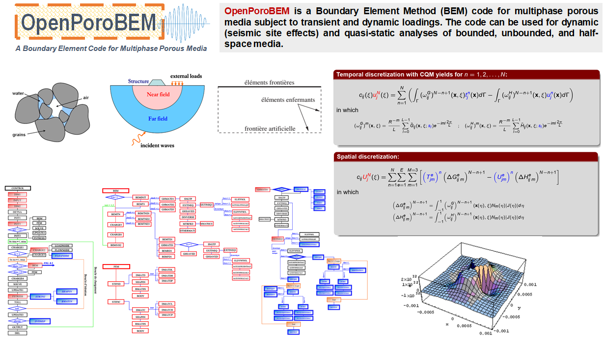

OpenPoroBEM Flowchart
OpenPoroBEM is a Boundary Element Method (BEM) code for multiphase porous media subject to transient and dynamic loadings. The code can be used for dynamic (seismic site effects) and quasi-static analyses of bounded, unbounded, and half-space media.

Academic Credits
Maghoul P., 2010. Fundamental solutions in multiphase geo-poro-mechanics for the analysis of seismic site effects (supervised by B. Gatmiri), PhD Dissertation, Ecole des Ponts ParisTech, Paris, France.
Nguyen K.V., 2005. Etude des effets de site dus aux conditions topographiques et géotechniques par une méthode hybride éléments finis/éléments frontières (supervised by B. Gatmiri). PhD Dissertation, Centre de Recherche et d’Enseignement en Mécanique des Sols (CERMES), Ecole des Ponts ParisTech, Paris, France.
Kamalian M., 2001. Time Domain Two-Dimensional Hybrid FEM/BEM Dynamic Analysis Of Nonlinear Saturated Porous Media (Supervised by B. Gatmiri). PhD thesis, Civil Engineering Department, School of Engineering, Tehran University.
Users' Manual and Useful DocumentationUsers' Manual and Useful Documentation here Further documentation on how to use the program, please follow the instruction on the source code documentation.
Users interested in OpenPoroBEM Code can download a users' manual here. Further documentation on how to use the program, please follow the instruction on the source code documentation at source code documentation.
Source Code and Licensing
This project has been and developed by a multidisciplinary community. The the source code has been released under open source Apache License 2.0.